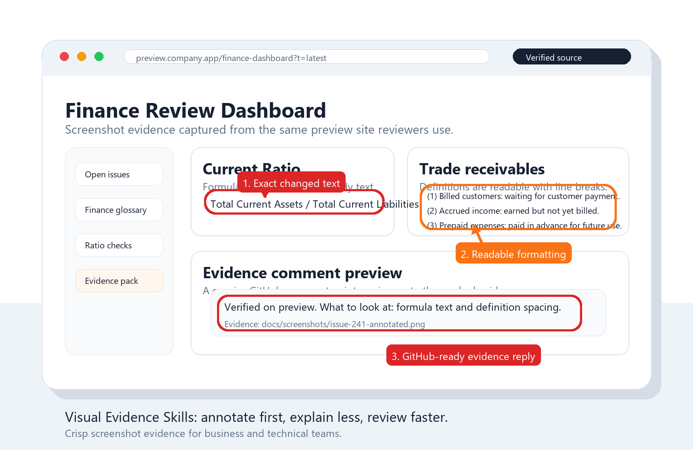

visual-evidence-annotations
Capture a screen, page, document, dashboard, or supplied image and mark the exact area with a circle, box, arrow, pin, or short label.
Use $visual-evidence-annotations
Install once, capture the right source, mark the exact area, and share proof that business and technical reviewers can understand at a glance.

These skills turn review evidence into a small repeatable practice: use the same source as the reviewer, add a clear visual callout, verify the image, then hand off a concise comment or image.
Use the Agent Skills core across Claude Code, Codex, OpenClaw, Gemini CLI, or generic skills-compatible harnesses. Add the GitHub companion when evidence needs to become an issue or PR comment.
Capture a screen, page, document, dashboard, or supplied image and mark the exact area with a circle, box, arrow, pin, or short label.
Use $visual-evidence-annotations
Prepare GitHub issue or PR comments with reachable annotated images, source URLs, concise validation notes, and reviewer-ready markdown.
Use $github-visual-evidence-comments
The workflow stays deliberately small so the evidence is trusted and easy to reuse.
Preview, production, staging, document, or supplied image. The screenshot should match what the stakeholder cares about.
Use one clear callout around the item being discussed. Keep the evidence readable.
Open the final screenshot and confirm the target, context, and text are all visible.
For GitHub, embed a reachable image and state what the marked area proves.
Run one command to install the portable skills and the best adapter for each detected AI harness.
npx github:Kokoabassplayer/visual-evidence-skillsUse visual-evidence to capture this page and circle the wrong number.
Use $github-visual-evidence-comments to draft the PR comment with the annotated evidence.If these skills help your team review faster, sponsorship supports the open-source project. It helps fund examples, documentation, automation scripts, and templates without creating a support SLA or custom-work guarantee.
The universal visual skill does not include GitHub, ticket, approval, or commit workflow steps. The GitHub companion adds only the evidence-comment workflow; it does not close issues, merge pull requests, change labels, or add resolving keywords unless explicitly requested.